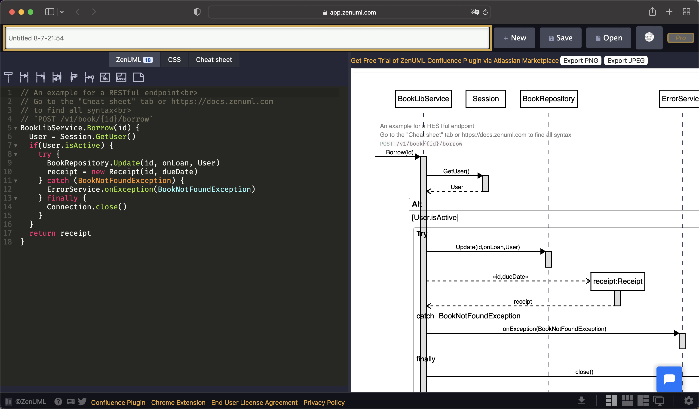

最近刚好听到一句话「学霸两支笔，差生文具多」，我觉得里边的差生形容我再适合不过了。我总是喜欢以「磨刀不误砍柴工」、「工具善其事必先利其器」的“借口”去找寻那些（可能）有用、能提高我效率的五花八门的工具，我日常用到的工具太多了，下边盘点几个我在今年上半年入手并且用认为好用的几个新工具，包括 Native 工具、Web 工具和 Chrome 插件。
飞书妙记
我平时喜欢听一些内容，比如蒋勋讲解的红楼梦，有时候听到好的段落想把那些部分记录下来，但又不想一个字一个字地手敲，所以一直在找一款好用的语音转文字的工具，最后被一个叫《 组织进化论 》的播客节目安利了飞书 App 里的「飞书妙记」的功能，这里提一句「组织进化论」也是字节孵化的一档节目。
我为了试用这个功能而下载了飞书，给我惊喜的是真的非常好用（包括飞书和飞书妙记），不仅支持导入音频文件转文字还支持实时录制的音频转文字，如果是多个人对话的话，可以自动帮我们把多个说话人区分出来。这就不止可以让我从有声书中提取内容了，它还可以让我更轻松地记录会议内容：好记性不如烂笔头，开会的时候打开录音模式，会后「妙记」就帮我把逐字稿生成了，参考着逐字稿写会议纪要就不会漏掉任何重要内容了。我还尝试使用在面试的场合，比如下图是我近期面的一个候选人，可以给我在后期写面评时提供抓手。
妙记还可以把对话中的关键词帮我们提取出来：
最最重要的是，它还是免费的，我之前用过几个收费的，比如科大讯飞，不管是价格还是可操作性方面都被飞书妙记吊打，但是有一说一正确性方面相比科大讯飞，妙记还是有一定提升空间的。
MenubarX
MenubarX 是一款非常实用的 macOS 小工具，它可以让你在菜单栏固定任何网页，供随时使用，就像原生 App 一样，我们可以将常用网站放在菜单栏使用。网友们已经把这个工具玩出花了，有在里边刷 Twitter、Ins 的，有用来看行情的甚至还有用来养鱼的，真成了个摸鱼 APP。
我自己最常用的就是用来看日历，用了好多日历 APP 都感觉不尽人意，比如有些不支持农历显示、有些不支持节假日显示，有些每周第一天是周日而且无法修改等等。在没有 MenubarX 之前，我每次在项目排期或者其他原因需要看日历时，都是手动在浏览器打开 https://wannianrili.bmcx.com/ ，这是我所找到的最简洁、实用的日历界面，但无奈没有 APP。
有了 MenubarX 问题就解决了，我直接将它固定到了我的顶部菜单栏，很方便就能唤出，而且可以设置独立的快捷键。因为 MenubarX 的窗口可以模拟成手机的尺寸和 UserAgent，所以日历页面就更简洁了，PC 版右侧的黄历移到了下边，这样就可以一目了然看到我最关注的日期部分了。
下载地址：https://apps.apple.com/app/id1575588022
我是在作者刚刚上架的时候开始的，那时候解锁 Pro 版限免，现在貌似是 30RMB。
Image Smith
Image Smith 这是个图片压缩工具，压缩后的图片体积可以减少非常多，而且压缩后的图片质量我们肉眼看不出差别（反正我是看不出来）。
我有时会把手机拍的照片放到博客中，比如这篇：https://jiapan.me/2022/da-guan-yuan/，原图一张十几 MB，压缩后可以到几 MB，这样能节省一半多的空间和带宽，而且效果上没有差别。
下载地址：https://apps.apple.com/app/id1623828135
这个工具也是我在作者刚上架限免时候下载的，现在卖 30RMB。类似的图片压缩工具还有一些在线版本，不想花钱买的可以试试：
为了用户体验和性能，我在有 Native 版本的情况下就不用 Web 版的，所以上边那几个在线版本我没有深入使用和对比过，都是之前收藏的以备不时之需，我按照网站的颜值排了序，大家可以自己测评一下看看哪个更好用。
Input Source Pro
这个工具可以帮我在使用不同的软件时自动切换到不同的输入法，避免我们因切换输入法而打断思路，比如在用开发工具（如 IDEA、GoLand、WebStorm）时切换到英文，在使用钉钉、微信这类聊天工具时切换到百度输入法，甚至支持在浏览不同的网站时使用不同的输入法。还可以做到自动记录上一次在某个软件中使用的输入法，下次再切回这个软件时自动切换为上一次使用的输入法。
每次从一个软件换到另一个软件时，Input Source Pro 都会贴心的提醒我当前在用（后这切换后）的输入法是哪个，但这个功能有个不好的地方，会在我要截图时给我带来困扰，每次我都要等 3 秒，等那个输入法悬浮提示消失后才能截图。
这个工具的同样想法我之前也想到过，而且还和朋友讨论过，无奈吃了不会 macOS 开发的亏。既然有人做了，而且做的还不错，那咱也就没必要再惦记着造轮子了。
官方地址：https://inputsource.pro/zh-CN
ZenUML（Web 工具）
ZenUML 是一款用伪代码画时序图的在线工具，画出来的时序图简洁漂亮，左边写代码右侧的时序图实时生成，所见即所得，而且可以直接导出 PNG 或者 JPG 格式的图片，登录后还可以将作品进行保存。我最近用它画了好多图，经常在做完方案介绍后被人问到图是用什么软件画的。

而且这还个良心工具，除非你想为信仰充值升级到 Pro 版，它们的唯一区别是 Pro 版没有代码行数的限制。免费版代码限制多少行我并不是很清楚，我之前画过几个很复杂的流程图都没有触发限制，说明我完全没有升级 Pro 版的必要。
类似工具还有：
ripgrep（命令行工具）
ripgrep 是一个支持递归和正则且性能超强的文本搜索命令行工具，类似于系统自带的 grep，但是甩 grep 几十条街。
Mac 安装：
1 | brew install ripgrep |
虽然它叫 ribgrep，为了让用户更方便使用，它在命令行中输入 rg 就可以使用了。我会把所有公司的项目放到同一个目录下，有次一个同事问我是否知道某个类型的消息是哪个服务发出的，我通过这个工具快速给了他答案：
ripgrep 是开源、用 Rust 编写的：https://github.com/BurntSushi/ripgrep
tldr（命令行工具）
tldr 是 too long; didn’t read 的缩写，tldr 这个工具也是出于同样的目的，告诉我们某个命令行的最常用、最实用的用法。我们在用某个命令时，如果看它的 help 可能会看到巨多无比的参数，从网上搜又会很费时，这时候 tldr 就派上用场了。
比如以上边刚刚介绍的 rg 为例，我想知道它的常用功能都有那些，如果用 rg --help 参数会多到直接让我放弃，看下 tldr 的效果：
1 | ~ took 5s ➜ tldr rg |
tldr 用一句话给我们描述了 rg 的功能，并给出了官方地址。下边还列了一些常见用法，比如不加任何参数可以递归查询当前目录下所有文件。rg --type filetype regular_expression 可以指定要查询的文件类型，等等。是不是比官方手册实用很多而且省去了到网上查一圈的麻烦。
还有很多小伙伴经常忘记 tar 的用法，也可以用 tldr 来做个快速回顾：
1 | ~ ➜ tldr tar |
Mac 安装：
1 | brew info tldr |
tldr 也是个开源项目，Github 地址：https://github.com/tldr-pages/tldr
GitToolBox（JetBrains 插件）
GitToolBox 是个 IDE 插件，这个插件可以直接让我们看到光标所在代码行的提交信息（提交人, 提交时间, CommitMessage），不用再通过侧边栏的 Annotate with Git Blame 来查看了，很方便。
Relingo（Chrome 插件）
Relingo 是个浏览器插件，可以在阅读英语文章时自动标记出那些我们可能生疏单词的解释，当我们认识某个单词后鼠标悬浮到对应单词然后在弹出框上打个勾，之后就不会再标记这个单词了，还可以对已经掌握的单词进行回顾，是个阅读英语文章和学习英语的不错工具。
官方地址：https://relingo.net/zh/index
Language Reactor（Chrome 插件）
Language Reactor 也是个浏览器插件，可以让我们在 Youtube 看英语视频时通过字幕学习遇到的句子或单词。打开视频后会自动在视频右侧加载出字幕列表，可以直接点击某行字幕将视频进度跳转到我们想看的那句话，在视频中鼠标悬浮在某个单词上后视频会自动暂停播放，然后弹出这个单词的解释，鼠标移开后自动开始播放。
Relingo 也带类似功能，但是术业有专攻，我觉得 Reactor 做的更好一些，所以如果两个插件都装了的话，需要手动把 Relingo 的字幕功能关闭。
官方地址：https://www.languagereactor.com/
Chrome 安装地址：https://chrome.google.com/webstore/detail/language-reactor/hoombieeljmmljlkjmnheibnpciblicm?hl=zh-CN
我从哪里听说的这些新工具？
上边的工具大部分都是我通过 Twitter 发现的，而且有几个是刚刚一出来我就开始用的，具体可以看下我这篇文章：https://jiapan.me/2022/what-i-access-to-information/